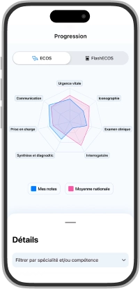
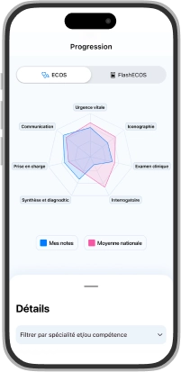
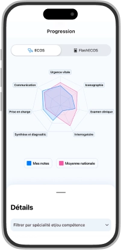

Fait par des médecins, pour des (futurs) médecins
ECOS Alpha, la plateforme unique de formation aux ECOS
 

ECOS Alpha
Essayer gratuitementFait par des médecins, pour des (futurs) médecins

Développé et conçu avec des médecins
Testé et validé par desétudiants
Conforme aux examens officiels
Une centaine de cas couvrant toutes les spécialités et domaines de compétences avec une correction détaillée et une technologie de suivi intégrée.
Pratiquez depuis vos téléphones même sans connexion, dans les conditions de l’examen, à deux ou trois joueurs.


Phase 2/3
Simulation
Phase 3/3
Résultat

L’étudiant est interne aux urgences et doit diagnostiquer un érysipèle chez un patient présentant une grosse jambe rouge aiguë. L’étudiant doit également éliminer la phlébite, et garder le patient en hospitalisation au vu des éléments de gravité.
L’apparition d’un œdème/érythème des membres inférieurs et une situation courante aux urgences. Les deux diagnostics principaux à évoquer (par ordre de fréquence ainsi que par gravité) sont bien sûr la TVP et l’érysipèle. Pour ces deux diagnostics l’examen clinique est en général assez pauvre il faut donc mettre le paquet sur l’interrogatoire.
Pour la TVP:
Pour l’érysipèle:
Dans un cas comme dans l’autre on recherchera la présence d'événements antérieurs! Enfin face à un diagnostic d’érysipèle il faut toujours se poser la question de l’hospitalisation. Celle-ci se fait au cas par cas mais on peut déjà retenir des facteurs très en faveur d’une hospitalisation:
Si tu souhaites être incollable sur les ECOS, rejoins-nous sur les réseaux sociaux.
Tu seras informé de l'arrivée des nouveaux cas et de toute l'actualité des ECOS, afin de te préparer de manière optimale et de briller lors de tes examens.
Gratuit
0€
Premium
Offre ECOS 2024
5€
par pack de 20 cas
L’étudiant est interne aux urgences et doit diagnostiquer un érysipèle chez un patient présentant une grosse jambe rouge aiguë. L’étudiant doit également éliminer la phlébite, et garder le patient en hospitalisation au vu des éléments de gravité.
L’apparition d’un œdème/érythème des membres inférieurs et une situation courante aux urgences. Les deux diagnostics principaux à évoquer (par ordre de fréquence ainsi que par gravité) sont bien sûr la TVP et l’érysipèle. Pour ces deux diagnostics l’examen clinique est en général assez pauvre il faut donc mettre le paquet sur l’interrogatoire.
Pour la TVP:
Pour l’érysipèle:
Dans un cas comme dans l’autre on recherchera la présence d'événements antérieurs! Enfin face à un diagnostic d’érysipèle il faut toujours se poser la question de l’hospitalisation. Celle-ci se fait au cas par cas mais on peut déjà retenir des facteurs très en faveur d’une hospitalisation: